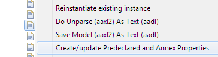
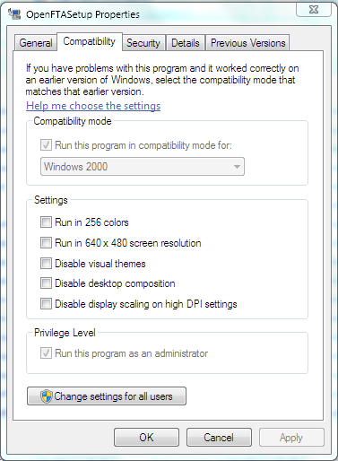

To fix that, you have to add the standard properties again. Right click on your project or model and select Create/update Predeclared and Annex Properties, as shown below.
To get the hint template: type the first letter of the keywords, e.g. s, then ctrl-space to bring up menue then select the proper template. Make sure cursor is immediately after the letter. (this works for all the keywords but a variation with feature groups or connections is not in the drop down...I cant recall exactly what it is at this point...)
There are the main reasons for having a model that does not instantiate:
In general, start with the most specific error and try to correct it.
Use the outline view to quickly navigate to the component classifier/features/properties by double-clicking on the component/feature/properties in the outline view.
Resetting the AADL perspective (e.g. getting all the window panes back to their default position) Click on the 'AADL' button in the upper RH corner. or MenuBar: Window-> Reset Perspective -> Reset the perspective to AADL defaults?-Y
Using your own AADL_Project file would conflict with the files provided by the plug-in. There are possibilities for supporting that but it would rather impact user experience. On the other hand, it could be done by following this process:
Make sure you activate the problem view and check that it reports all information, as described in this page.
You want to work in the AADL perspective. You can set it through Open Perspective in the Window menu (or in the Perspective toolbar found on the right in the tool bar section).
You want to make sure your projects have the AADL and Xtext nature enabled. This should be done automatically when creating an AADL project but you may need to do that manually. This is typically indicated by a decorator on the project. You can enable the natures in the AADL Navigator by selecting the project and invoking Configure in the context menu. The Xtext nature drives the auto-build (compilation) process.
The Problems view in Eclipse presents markers attached to resources in the workspace. (If you do not have the view, you can open it through the menu Window/Show View). These markers are tagged as Error, Warning, or Information. They carry a message and are associated with location information (to lines or model elements). The Markers are also typed and can be sorted and filtered by type.
You can specify what the content of the Problems view is by configuring it through commands available through a menu (triangle) in the top right of the Problems view.
It is useful to select Group by/Type as this will group markers from a particular analysis together rather than grouping them by error, warning, info.
It is also useful to Configure content… Users like to set the Scope to be On selected element and its children. This will cause only the markers of a selected file, folder, or project to be shown. You can also define new configurations, where you limit the type of marker that you want to have included, e.g., only markers of certain analyses.
When installing OpenFTA, you may have an error related to Java. On Windows 7, you have to right-click on the installer and change the compatibility options and check, make sure to execute the software under the Windows 2000 compatibility mode. The picture below shows the dialog box used to set this property.
